- 1 - Заповнюємо поле «вхідний номер (реєстраційний номер) заяви»,
- 2 - Заповнюємо поле «дата надходження (дата реєстрації)»,
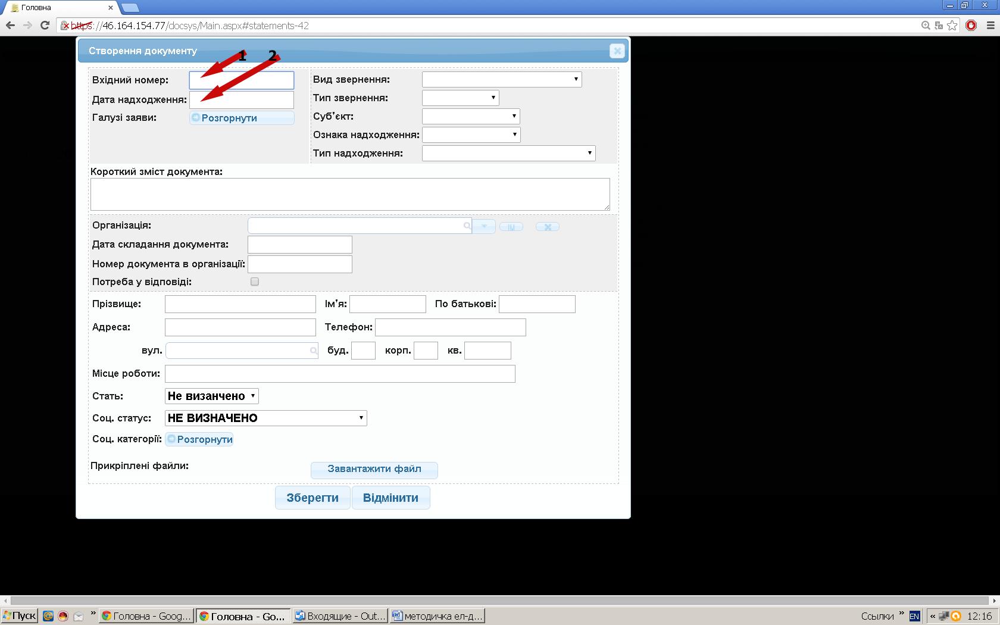
Рис. 1.3
- 3 - Заповнюємо поле «галузі заяв» (обираємо з вказаного переліку питання висвітлені у заяві, ставимо відмітку навпроти обраної галузі (ліфтиком 1 можна прокручувати догори або вниз), після обраної категорії слід натиснути «Згорнути») Рис.1.4.
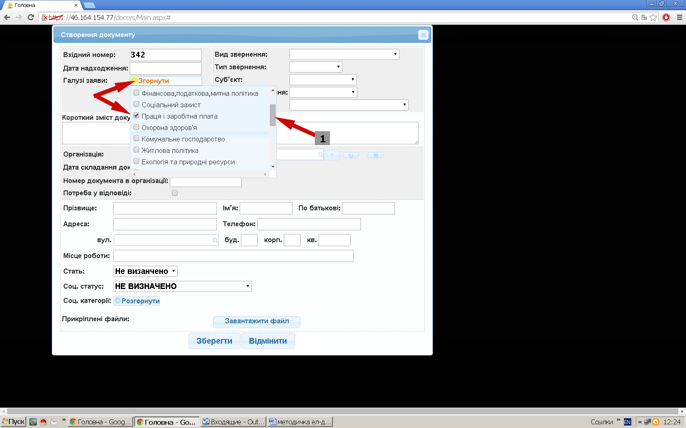
Рис. 1.4
- 4 - Заповнюємо поле «вид звернення» (обираємо зі списку) Рис.1.5.
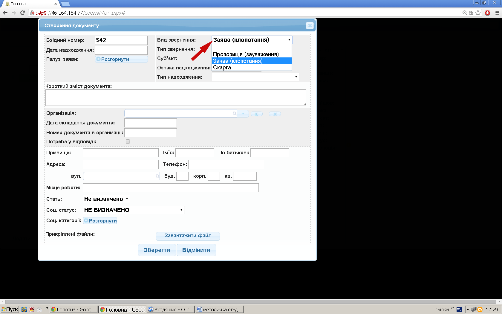
Рис. 1.5
- 5 - Заповнюємо поле «тип звернення» (обираємо зі списку) Рис.1.6.
Рис. 1.6
- 6 - Заповнюємо поле суб’єкт (обираємо зі списку) Рис.1.7.
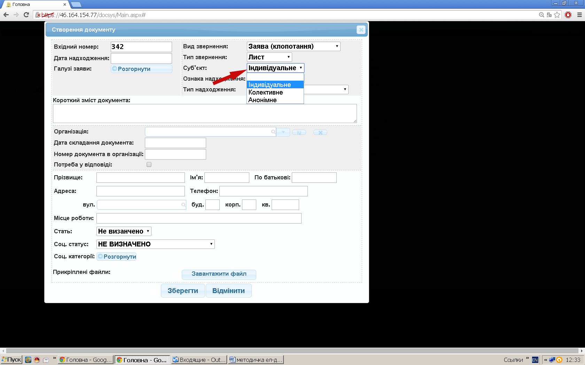
Рис. 1.7
- 7 - Заповнюємо поле «ознака надходження» (обираємо зі списку) Рис.1.8
Рис. 1.8
- 8 - Заповнюємо поле «тип надходження» (обираємо зі списку) Рис.1.9
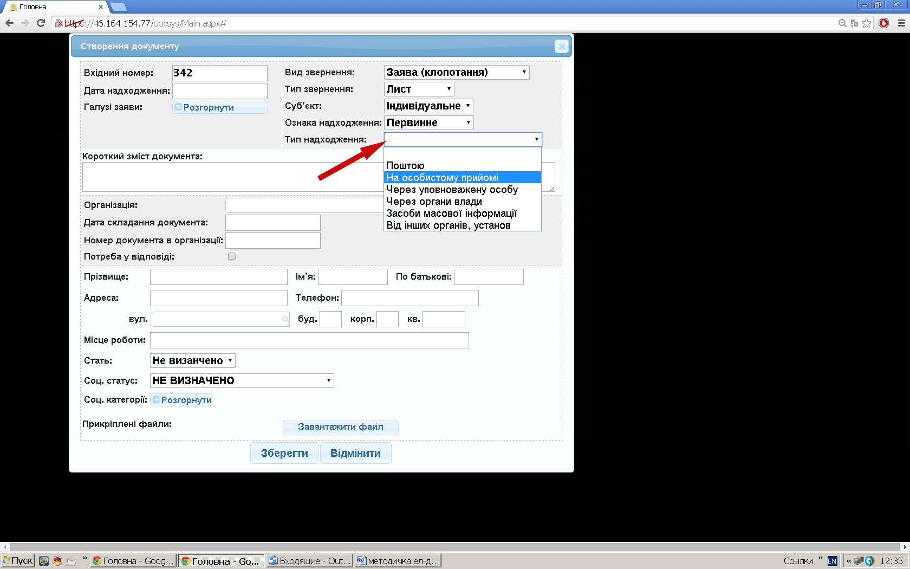
Рис. 1.9
- 9 - Заповнюємо поле «короткий зміст документу» (вказуємо інформацію, яка в подальшому допоможе при пошуку документу) Рис.1.10
Рис. 1.10
- 10 - Заповнюємо поле організація (обираємо зі списку назву організації, від якої надійшла заява), якщо необхідно Рис.1.11
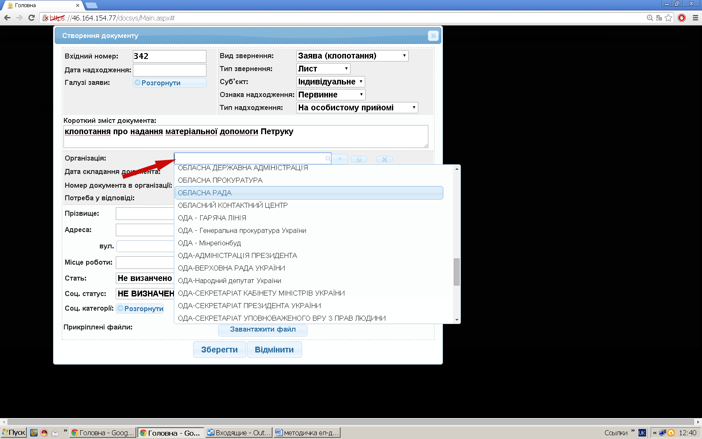
Рис. 1.11
- 11 - При заповненні поля організація необхідно заповнити поле «дата складання документу» Рис.1.12
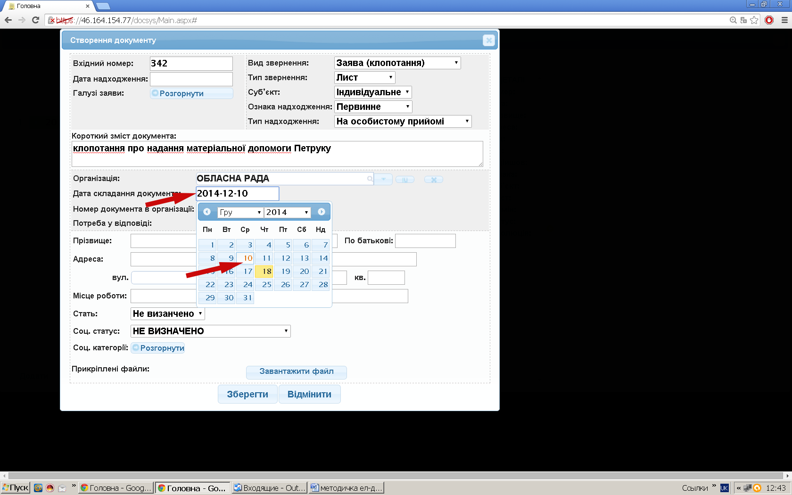
Рис. 1.12
- 12 - При заповненні поля організація необхідно заповнити поле «номер документа в організації» Рис.1.13
Рис. 1.13
- 13 - При заповненні поля організація необхідно поставити (або не ставити) галочку «потреба у відповіді»Рис.1.14
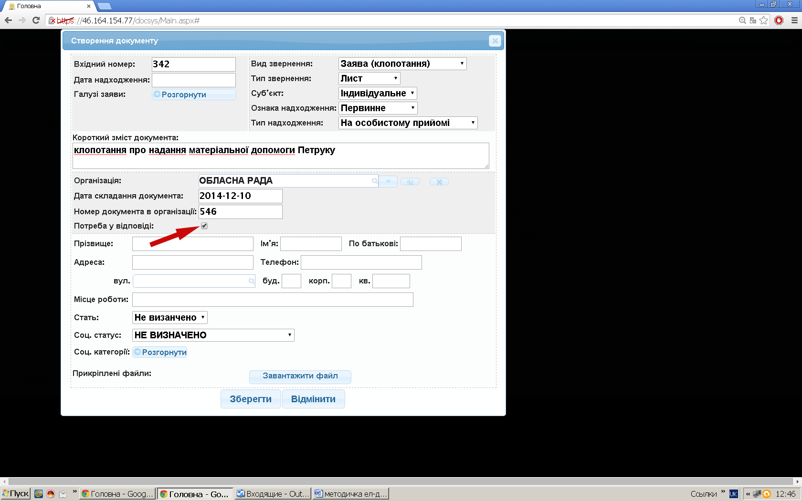
Рис. 1.14
- 14 - Заповнюємо поля особистих даних Рис.1.15
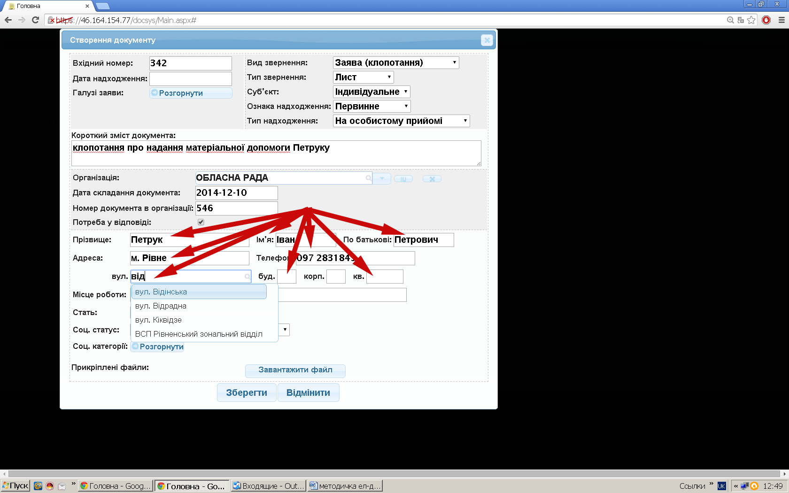
Рис. 1.15
- 15 - Продовжуємо заповнювати поля особистих даних (у полі місце роботи можна обрати зі списку, у полі соц. категорії обираємо зі списку, а потім тиснемо згорнути) Рис.1.16
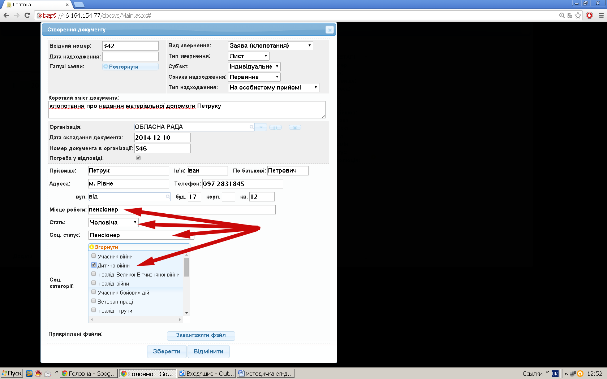
Рис. 1.16
- 16 - Прикріплюємо файл (обираємо завантажити файл) Рис.1.17
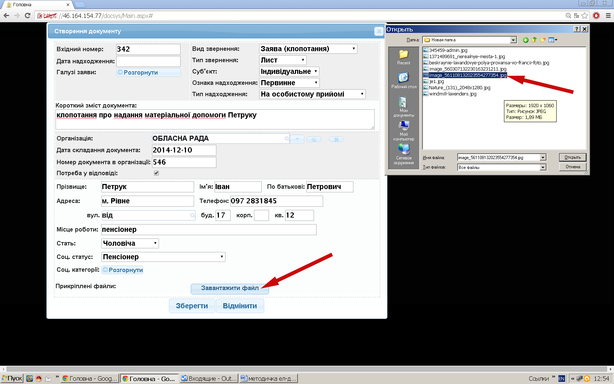
Рис. 1.17
- Додаємо заздалегідь підготовлені файли (Рис.1.17) (скановані). Прикріплення файлів: кнопка завантажити файл. Далі обираємо місцезнаходження документа на вашому комп’ютері (обираєте («робочий стол», або «мои документы», або «мой компьютер». Далі обираємо локальний чи інший («съемный диск», дискета, диск). Далі обираємо папку, де розміщений файл. Насамкінець вказуємо необхідний файл), або файл на комп’ютері (папці), що знаходиться в мережі.
- 17 - Тиснемо зберегти Рис.1.18
Рис. 1.18